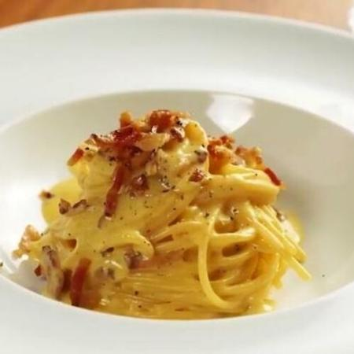

Carbonara Spaghetti

Description
This is the classic version of carbonara I grew up eating. Serve it
piping hot tossed with extra Parmesan cheese and chopped Italian parsley.
Original recipe
Ingredients:
- 4 eggs, lightly beaten
- 2 cups heavy cream
- 1 cup freshly grated Parmesan cheese
- 1 (16 ounce) package penne pasta
- 1 tablespoon olive oil
- 1 onion, chopped
- ½ pound sliced pancetta, chopped
- ½ teaspoon ground nutmeg
- ½ cup pine nuts, toasted
- ½ teaspoon salt
- 1 teaspoon black pepper
- ¾ cup chopped Italian flat leaf parsley
- ½ cup freshly grated Parmesan cheese
Steps:
- Whisk together the eggs, cream, and 1 cup of Parmesan cheese in a bowl. Blend thoroughly, and set aside.
- Bring a large pot of lightly salted water to a boil. Add the pasta, and cook until al dente,
or for 8 to 10 minutes. Drain pasta, then return it to the pot (off of the heat), and cover to keep warm.
- Meanwhile, heat the olive oil over medium heat in a large skillet; add the onion and cook until transparent,
about 8 minutes. Remove onion from the skillet; place in a bowl, and cover to keep warm.
- Using the same skillet, cook the pancetta over medium heat until browned, tossing with nutmeg. Drain on paper towels.
- Combine the pasta, onion, pancetta, pine nuts, salt, and pepper in the same large skillet over low heat.
Slowly stir in the egg-cream mixture, tossing gently so the eggs don't scramble. Cook until just heated through.
Remove from heat and toss with parsley and remaining 1/2 cup Parmesan cheese. Serve immediately.